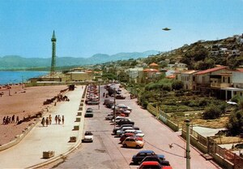
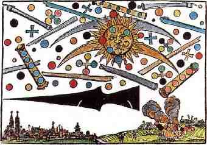
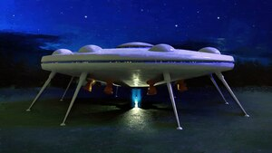

НЛО — неідентифіко́ваний (невпі́знаний чи непі́знаний чи неви́значений) летю́чий об'є́кт — будь-який об'єкт, що перебуває в атмосфері або в космічному просторі.
У масовій культурі цю назву використовують вільніше для опису інопланетного корабля, що є одним з декількох пояснень, запропонованих для таких явищ.
Явище появи невпізнаних летючих об'єктів у широкому сенсі існувало впродовж всієї людської історії, хоча сам термін «НЛО» ввійшов до ужитку в XX столітті.
З наукового погляду й досі не існує жодного підтвердженого доказу того, що НЛО якимось чином пов'язано з прибульцями, а перший контакт лишається сюжетом фантастики.
Використання терміну
Спостереження невідомих явищ інтерпретується людьми по-різному, залежно від панівних у суспільстві уявлень, вірувань і страхів.
Часто пояснення суті того чи іншого явища визначається релігійним і політичним контекстом місця та епохи, де це відбулося.
У сучасній масовій культурі під НЛО зазвичай розуміється об'єкт, поява якого пов'язується з візитом на Землю розумних істот або посланих ними безпілотних літальних апаратів.
Поширене уявлення про НЛО як «летючі тарілки», але це лише одна з багатьох спостережуваних форм, яка набула розголосу з 1947 року.
Спостереження НЛО

Перший задокументований випадок, який можна ототожнити з НЛО, міститься у Плутарха.
Він повідомляє, що в 73 р. до н. е. війська римського полководця Лукулла і боспорського царя Мітрідата побачили велике бочкоподібне вогненне тіло, яке за кольором нагадувало розплавлене срібло.
Об'єкт пронісся між арміями, так налякавши обидві сторони, що вони розійшлися без битви.
В античних записах є і менш конкретні записи про появу «небесних кораблів» і «колісниць» у хмарах.
Дослідження НЛО

В дослідженнях проблеми НЛО впродовж XX—XXI століть сформувалося кілька парадигм.
Природна, націлена на пояснення феномена НЛО як сукупності природних фізичних явищ: оптичних і, можливо, плазмових.
Штучна пояснює НЛО як чиїсь літальні апарати: земні, інопланетні, або з паралельних світів.
Суб'єктивістська оцінює НЛО як прояв міфологічної свідомості та «масову істерію».
Об'єктивістська парадигма не дає оцінок природі НЛО, натомість шукає емпіричну інформацію про феномен НЛО, уникаючи теоретичних концепцій.
Класифікація взаємодій з НЛО
Нижче наводиться варіант класифікації повідомлень про контакти з НЛО, запропонований уфологом Джозефом Алленом Гінеком.
Контакти на великих відстанях
- Нічні вогні. Ясно помітні, чітко окреслені вогні невідомої природи, зазвичай червоного, помаранчевого або білого кольору.
- Денні диски. Це спостережувані в денний час об'єкти, як правило, овальні або дископодібні, з вигляду металеві.
- Радіолокаційні „сплески“ на екрані радіолокаторів, особливо які збігаються з візуальним спостереженням за НЛО.
- Денні світні об'єкти. Ясно помітні вдень, світні літаючі об'єкти. В основному не мають чіткої форми.
Близькі контакти
- Контакти першого роду. НЛО спостерігається в повітрі та, за враженням, не взаємодіє з навколишнім середовищем
- Контакти другого роду. Pеєструється взаємодія НЛО з навколишнім середовищем у вигляді перешкод в роботі радіоелектронних пристроїв
- Контакти третього роду. У цій підгрупі повідомлень присутні мешканці НЛО — більш-менш людиноподібні істоти, звані зараз гуманоїдами.
(Зазвичай вони не входять в прямий контакт або в переговори з очевидцями.) - Контакти четвертого роду...